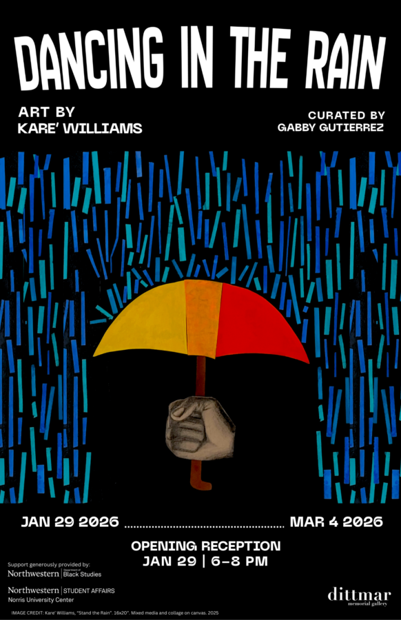

Dancing in the Rain
Dancing in the Rain interrogates the fraught relationship between Black identity and Americanism. This body of work does not seek definitive answers but unfolds as an embodied exploration, a reflection of the artist’s lived experience in a space that claims his belonging yet weaponizes its conditions against him. The central questions pulse through each piece; Is “American” an identity he can claim, or a tool of control wielded by his oppressors? As Kare’ Williams journeys through this inquiry, he is not only interested in the tension between America and people of color, but also in how we transform these tribulations into positivity.